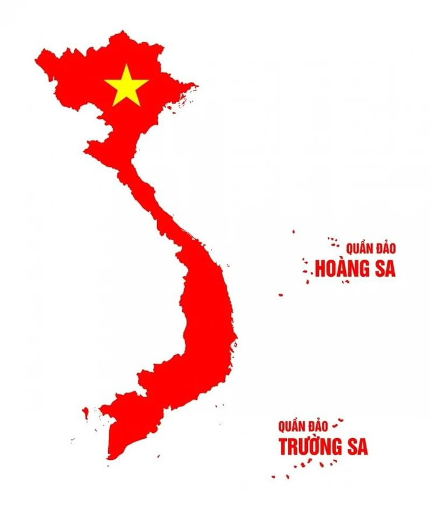
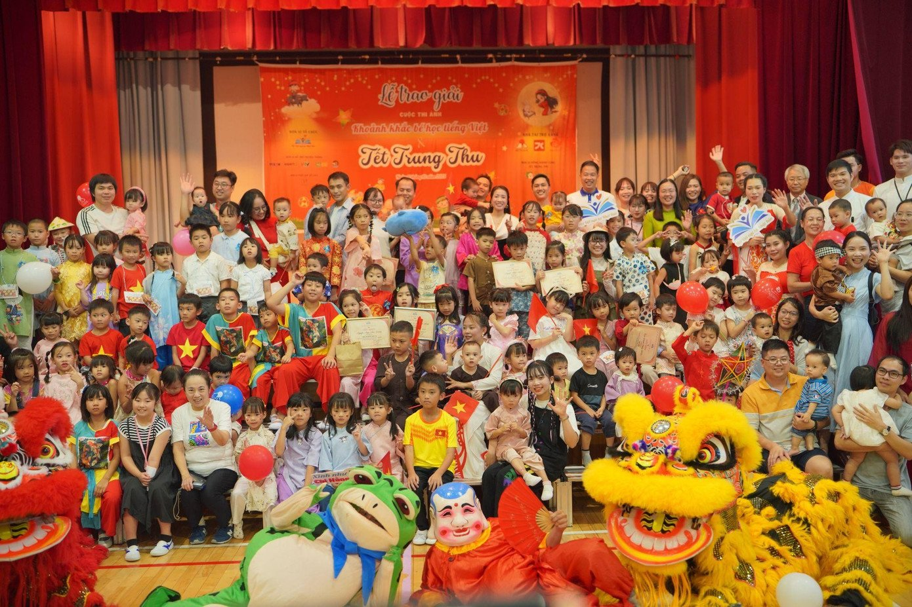

私たちについて
このウェブサイトは、ベトナムの美しい故郷を紹介するために制作された卒業制作プロジェクトです。 チームのメンバーそれぞれが自分の出身地を紹介し、文化や歴史、そして地域の魅力を日本語で発信しています。
私たちは、デザイン・コーディング・写真編集・翻訳などの作業を分担しながら、 チームワークを大切に制作を進めてきました。 プロジェクトの目的は「見る人にベトナムをもっと知ってもらうこと」。 それぞれのページに、地元の風景、人々の温かさ、そして独自の文化を詰め込みました。
授業で学んだ知識を活かし、実際のウェブ制作スキルを磨きました。 企画からデザイン、そして最終的な公開まで、自分たちの力で仕上げる経験は非常に貴重でした。 このプロジェクトを通して、私たちは単なる技術だけでなく、仲間との協力、責任感、そして表現する楽しさを学びました。
ベトナムの魅力は、自然の美しさだけでなく、人々の笑顔や文化の多様性にもあります。 私たちの夢は、このサイトを通して日本とベトナムの文化交流がさらに深まることです。 将来的には、より多くの地域や言語にも対応させ、世界中に「私たちの故郷」を届けたいと考えています。